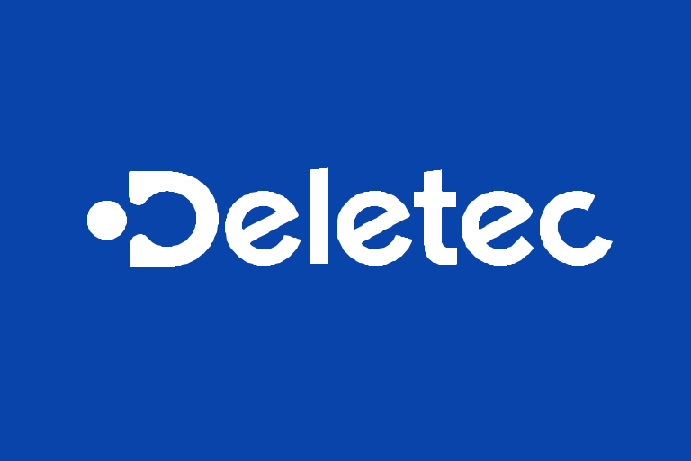

Deletec
Alternance actuelle
Septembre 2024 - aujourd’hui
Technicien systèmes & réseaux · Alternance
Depuis septembre 2024, je poursuis mon parcours chez Deletec en alternance. Après avoir découvert l’entreprise lors d’un premier stage en 2023, j’ai eu l’opportunité de la rejoindre à nouveau pour préparer mon BTS SIO, option SISR.
Au fil des mois, j’ai progressivement gagné en autonomie et en responsabilités, en passant de la découverte du fonctionnement d’une entreprise de services informatiques à la prise en charge de situations concrètes auprès de ses clients.
Après l’obtention de mon BTS en 2026, j’ai choisi de poursuivre cette progression avec un Bachelor Administrateur Systèmes & Réseaux, toujours en alternance chez Deletec. Cette continuité me permet de consolider mes acquis et d’évoluer vers mon objectif : l’administration des infrastructures informatiques.
Découvrir mes missions chez Deletec
Deletec
2023 - 2024
Lors de mon premier stage chez Deletec, intégré au service logistique et préparation informatique, j’ai participé à la mise en place et à la configuration d’équipements destinés aux clients.
Mes missions comprenaient l’installation physique d’équipements réseau Fortinet, l’intégration de cartes PCI dans les postes clients, l’installation personnalisée de systèmes Windows ainsi que la configuration de téléphones IP.
Cette immersion de deux mois m’a permis de découvrir les exigences techniques et organisationnelles d’une entreprise de services informatiques. À l’issue de cette expérience, mes responsables m’ont proposé de poursuivre mon parcours en BTS SIO en alternance au sein de l’entreprise.